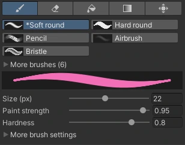
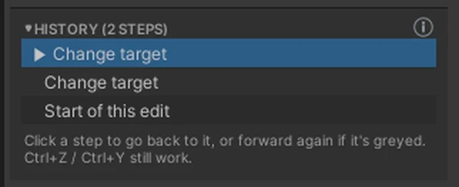
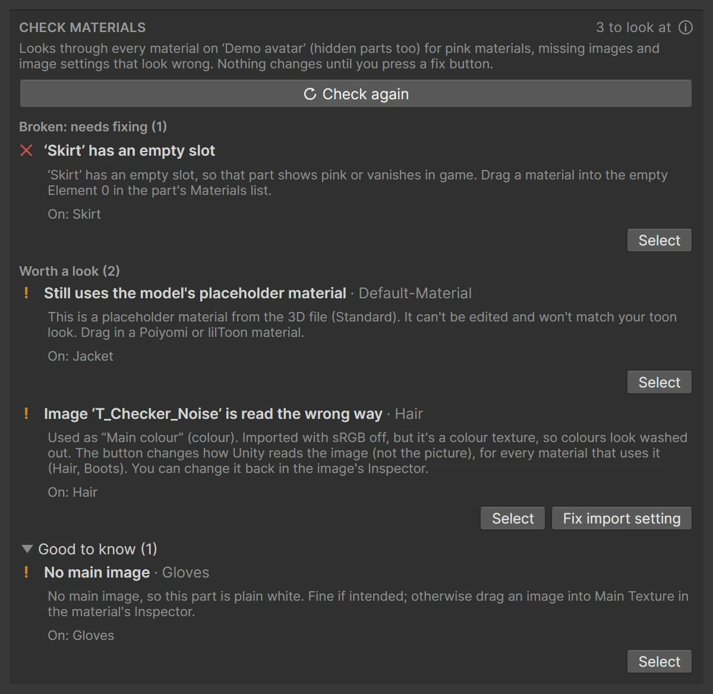

Every tool in action.
Short loops from the real window.
Select exactly what you mean.
Six ways to pick pieces. Each loop picks the same region.
Paint like in your art app.
11 brushes, 28 blend modes, masks and gradients. Every stroke sits on a layer you can hide, move or change later.

- 11 brushes
- 3D brush on the model
- Symmetry
- Drawn gradients
- Decals
Every edit is its own layer.
Scroll to pull the wing texture apart. These are its layers.

28 blend modes. 11 adjustment layers.
Every picture is the same texture with the same gradient layer.
Recolour and match.
Shift a colour, copy it from another part, or fade it from root to tip.
- HSLHue, saturation and brightness bars.
- Gradient mapGive grey pixels a range of colours.
- Colour matchCopy the colouring of another texture or part.
- Root to tipFade a colour along the hair.
Tune the material.
A material decides how a part reacts to light: its colour, shine, glow and outline. Avistry puts the settings people change most in Poiyomi and lilToon on a few plain sliders, so you don't have to dig through the shader's long list.
- Pick a part on the model.
- Move a slider and watch it change live.
- The sliders change a copy of the material, made with one click. The original stays as it was.
- TintShifts the colour of the whole material, on top of the texture. Handy to try a colour before you repaint.
- GlowMakes eyes, trim or lines give off their own light, so they stand out in dark worlds.
- Rim lightA bright edge along the outline of a part, so it stands out from the background.
- MatcapA ready-made shine laid over the part, for a glossy, reflective look on skin, latex or gems.
- ShadowPicks the colour of the shaded side. A warm or coloured shadow makes toon shading look richer.
- OutlineChoose the colour and width of the line around a part, when your shader has an outline.
- MetalMake a surface read as polished metal. Poiyomi needs its PBR section on; lilToon Lite has no metal.
- GlitterAdd sparkling specks and choose their colour. Your shader decides how they move.
Bake maps.
Two maps that give a flat texture depth, made for you in seconds. There is a toon face shadow map for anime faces too.
Shading in creases
Ambient occlusion
Soft shading where light hardly reaches: creases, under the hair, between feathers and fingers. Flat toon textures get depth without painting shadows by hand.
- Baked from the model in its current pose, on your graphics card.
- Clothing and hair can shade the part under them too.
- Added as a Multiply layer: fade it with Layer opacity or keep it off places with a mask.
Bumps from the texture
Normal map
Fake bumps made from the light and dark details of the texture: stitches, fabric, scales, hammered metal. Light catches them as if they were really raised.
- Strength and Smoothness set how deep and how fine the bumps are.
- Keeps the bumps of the material's own normal map and adds the new ones on top, if you like.
- Saved as a new PNG next to the texture. Apply to material puts it in the slot, and Ctrl+Z takes it out.
Safety, in detail.
Every edit can be undone, and saving never touches your originals.
Go back to any step.
Drag through the edit history of this hair. In Avistry, click a step in the History list to go back to it.

Ctrl+Z undoes every edit.
Your files stay safe.
Saving adds new files next to the original. The original stays exactly as it was.
Textures
Hair_color.pngstays as it was
Hair_color_ats.pngthe new PNGHair_ats.mata copy of the materialHair_color_ats_recipe.assetyour layers, to keep editing later
Catch problems before you upload.
The material audit looks for what makes avatars blurry, heavy or pink, and fixes most of it with one click.
Audit of the showcase avatar
- Crunch compression off
Why it matters
Crunch shrinks the download but smears colour and detail, and turning it off makes the avatar a little bigger. Avistry warns you and has a Turn off Crunch button.
- PNG, not JPG
Why it matters
A JPG blurs detail and cannot hold transparency. Avistry flags JPG sources and always saves a PNG.
- Power-of-two sizes
Why it matters
Sizes like 1024 or 2048 use less memory than odd sizes, which can look soft. Avistry tells you when a size is off.
- Kaiser mipmaps
Why it matters
The Box filter blurs a texture when it is seen from far away. VRChat recommends Kaiser, and there is a Use Kaiser button in Advanced mode.
- Read the right way
Why it matters
Colour images need sRGB on, and data images like masks need it off. Normal maps need the Normal map type. Wrong settings wash out colour or break an effect, and Fix N image settings corrects them.
Also done every time you save
- Same import settings on the new PNG
Why it matters
The saved PNG copies the original's max size, compression and other import settings, so it behaves like the file it replaces.
- Seam padding on save
Why it matters
On colour textures laid out by the part’s UVs, the empty space around pieces is filled with their edge colours, so mipmaps do not pull the background into seams.
- Material audit
Why it matters
Finds empty slots, extra materials that draw a part twice and slow the avatar, pink shaders and missing images, hidden parts included.

Learn as you go, if you like.
Learn Unity while you paint.
40 short skills, from finding the Hierarchy to baking maps. Each one explains a word in plain language and shows where it lives in Unity. Nothing is locked.


An AI helper, if you want one.
Off by default. Connect your own AI app through MCP for Unity. Its edits show up as undoable AI: steps, and pictures are sent only after you click Allow.
Every feature, in one list
Pick and check
- Choose a part from a list, or click it on the model
- Edit every part that shares a texture together, or just one
- Check materials: pink shaders, empty slots, hidden parts too
- Fix the image settings it can fix (colour space, normal map type, Crunch) in one click
- Picks the part again after Unity restarts
- Preview at 512 to 4096 px. Saving is always full size
Select
- Click pieces on the model or on the texture sheet
- Shift adds a piece, Ctrl removes one
- Selected pieces glow orange, in the Scene view too
- Keep any edit inside the pieces you picked
- Mirror strokes to the other side of the model
- Box, lasso and magic wand, on the texture or in the Scene view
- Take a whole part, a UV tile, or grow and shrink a selection
Colour
- Recolour a whole material through Poiyomi or lilToon, no new PNG
- One piece at a time, each part keeps its own colour
- Tint white and grey parts and keep the shading
- Hue, saturation and brightness bars
- Copy colouring from another texture or part (Colour Match)
- Give colour to grey pixels (HSL layer)
- Recent colours, history and saved swatches
- Quick material controls for Poiyomi and lilToon, on a copy
Paint
- 11 brushes: soft, hard, pencil, airbrush, marker and more
- Round, square, bristle and spray tips
- Grain, scatter, jitter and colour variety per stroke
- Blur, smudge and wet-paint colour mixing
- Fill, eraser and an eyedropper
- Gradients: linear, circle and ellipse
- Save your own brushes
- Pen pressure for size and opacity
Layers
- 28 blend modes and an opacity for each layer
- Clip a layer to the one below it
- Layer masks that hide without erasing
- Image layers for logos and patterns, tiled if you like
- Adjustment layers: levels, curves, gradient map, posterize and more
- Hide, reorder, duplicate and delete layers any time
- A history list: click a step to go back
Maps and decals
- Bake ambient occlusion for soft shading in creases
- Make a normal map from the texture
- Make a face shadow map
- Flatten Poiyomi and lilToon decals into one image layer
Save and safety
- A new PNG and a material copy, never an overwrite
- Ctrl+Z undoes every edit
- Layers saved next to the PNG to edit again later
- Editor only: nothing goes into your upload
- No telemetry; the update check is opt-in
- One-click fixes for common problems
Learn as you go
- Simple mode for everyday controls, Advanced for everything
- Info icons that explain a control and show you how
- A glossary with 41 words, in plain language
- A skill tree with 40 skills in 6 tiers
- A shortcut list: S, B, E, G, I, X and [ ]
AI helper (optional)
- Off until you switch it on
- Look only, or look and edit, with a Stop button
- Every change is one undo step named AI
- Saving and pictures wait for your Allow
Get it
Your avatar. Your colours.
Free. Editor only. Your originals stay as they are.
VCC did not open? The Download page has the listing URL and the other ways to install.
- Will it change my original?
- No. Saving makes a new PNG and a new material copy.
- Does it work with Poiyomi and lilToon?
- Yes. Selecting and painting work on any shader.
- Is it free?
- Yes. It is free and open source (MIT).